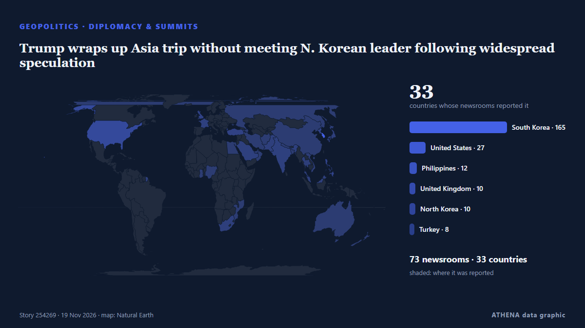

Géopolitique, politique et sécurité
SponsoriséPrésenté par  Cybernetics and Artificial Intelligence Lab Welcome to the Cybernetics and Artificial Intelligence Laboratory, established at the Department of Business Administration of the National and Kapodistrian University of Athens. The lab is headed by Professor Dimitrios Thomakos. The lab aims to do research that can be published in top venues. Our research uses tools and methods of Artificial Intelligence, and lies in the following areas: - Forecasting - Decision making - Cyber security - Finance We are always looking forward to collaborating with exceptional students!
Cybernetics and Artificial Intelligence Lab Welcome to the Cybernetics and Artificial Intelligence Laboratory, established at the Department of Business Administration of the National and Kapodistrian University of Athens. The lab is headed by Professor Dimitrios Thomakos. The lab aims to do research that can be published in top venues. Our research uses tools and methods of Artificial Intelligence, and lies in the following areas: - Forecasting - Decision making - Cyber security - Finance We are always looking forward to collaborating with exceptional students!
Les titres sont affichés en anglais, tels que publiés.

Diplomatie et sommetsTrump wraps up Asia trip without meeting N. Korean leader following widespread speculation
SHENZHEN, China, Nov. 19 (Yonhap) -- U.S. de Yonhap (English)
| 7 nov. | 211 |
|---|---|
| 8 nov. | 200 |
| 9 nov. | 317 |
| 10 nov. | 287 |
| 11 nov. | 261 |
| 12 nov. | 264 |
| 13 nov. | 224 |
| 14 nov. | 179 |
| 15 nov. | 197 |
| 16 nov. | 272 |
| 17 nov. | 257 |
| 18 nov. | 224 |
| 19 nov. | 162 |
| 20 nov. | 0 |
International News: Trump, Xi and Putin hold rare 3-way meeting in China
From the U.S. side, meanwhile, the Trump administration surprised many observers by pushing for discussions about reducing nuclear weapons while in Shenzhen. de Defense News
Riyadh's tallest building damaged as Saudi reports new Houthi attacks
RIYADH, Saudi Arabia (AFP) -- A skyscraper in Riyadh housing the headquarters of Saudi Arabia's sovereign wealth fund was damaged on Thursday, witnesses told AFP, as the kingdom reported new attacks… de Korea Herald
Brazil's Senate approves Lula's $10 billion fiscal package after costly election spending
Brazil’s Senate approved on Wednesday a plan by President Luiz Inácio Lula da Silva to control his government’s spending and increase revenues after his reelection late October. de ABC News (International)
'We will not negotiate' — Putin addresses Ukraine's strikes on Crimean Bridge
The remarks marked the Russian president's first public reaction to the attacks on the bridge, which he described as having sustained "serious damage." de Kyiv Independent
With US midterms underway, courts rebuff Trump's pressure on state election officials
Nov 3 - In the hours before polls opened for the US midterm elections on Tuesday, federal judges issued a series of rulings restricting the Trump administration's unprecedented efforts to pressure… de The Straits Times
China's Xi calls for a world free of nuclear weapons in meeting with Trump, Putin
BEIJING: Nuclear weapons should be comprehensively prohibited and completely destroyed, with the ultimate goal of building a world free of nuclear weapons, Chinese President Xi Jinping said in a… de Business Recorder
US, China can help end Ukraine war, Trump tells Xi before trilateral with Putin
By Jarrett Renshaw and Trevor Hunnicutt SHENZHEN, China, Nov 19 (Reuters) - US President Donald Trump told his Chinese counterpart Xi Jinping on Thursday that they should both help end the war in… de Al-Monitor
US Democrats flip Alaska Senate seat as Mary Peltola wins race
The US Senate's final outstanding midterm election race has been won by Mary Peltola. de DW English
Elon Musk says record $446m spending on US midterms was ‘pretty foolish’
The multi-billionaire also said he was "not Maga", distancing himself from the political movement linked to Trump. de BBC Business
With new speaker, Israel parliament moves to unravel Netanyahu legacy
Israel’s parliament, under new speaker Matan Kahana, begins efforts to reverse the legacy of caretaker Prime Minister Benjamin Netanyahu. de Arab News
Who is Hakeem Jeffries, the Democrat nominated to become the first Black US House Speaker
Poised to become the next Democratic House speaker, Jeffries has shifted from unconditional support for Israel to calls for change, but remains vague about what that means as progressives press him… de Haaretz (English)
Estonia to close border with Russia after arson attack on local drone maker
Estonia plans to close its road border crossings with Russia in response to an attempted arson attack against Estonian defense company Threod Systems. de Defense News
Trilateral meeting between Trump, Xi and Putin held in Shenzhen
Kremlin spokesman says Russian, Chinese and US presidents will meet on sidelines of APEC summit. de Anadolu Agency (English)
Xi meets Trump in China's Shenzhen
On Thursday evening November the 19th in Shenzhen, Trump, Xi and Putin will sit in the same room for the first time. de FXStreet
Prince Harry: I’d rejoin the military to fight Russia
Prince Harry spoke exclusively to The Telegraph's Ukraine: The Latest podcast during an unannounced visit to Lviv. de Business Insider
Israel begins new military operation in Gaza
Israeli tanks advanced in an area of the central Gaza Strip on Wednesday, witnesses said, and the Israeli military said its forces were targeting Hamas infrastructure outside the "Yellow Line" that… de France 24 English
Saudi-led coalition says it intercepted Houthi ballistic missiles, destroyed launcher
Coalition reports missile threats targeting Riyadh, southern Saudi Arabia, debris causing material damage in capital. de Express Tribune
Trump meets Xi after Putin talks as leaders discuss ending Ukraine war
President Trump plans to discuss Ukraine with the leaders of Russia and China. de The New York Times (World)
Parliament amends bill on Iran’s accession to Mecca Pact
Tehran, IRNA – Iranian lawmakers have approved amendments to a bill on the government’s accession to the Mecca Pact. de IRNA (English)
Russian national accused of spying on employees of Silicon Valley defense and technology company
A Russian man who prosecutors say was recruited by his government has been charged with stalking employees of a Silicon Valley technology and defense company in order to gather intelligence, the… de The Canadian Press (via CityNews)
US hits out at Ukraine’s ‘deep strikes’ against Russia
US defence official Elbridge Colby said support for Kyiv should be focused on bolstering the front line. de The Straits Times
Iran fires on US airbase in Kuwait, several times at Bahrain
Iran fired on a US airbase in Kuwait and several times at Bahrain on Wednesday, in what appeared to be retaliation for US strikes the day before, AP reported. de Gulf News
Widespread outages hit banks, air travel, the NSA and Apple, disrupting seemingly everything
Major outages showcase the risks of interconnected tech in the age of AI. de CNBC World
Japan scrambles fighter jets after Russian aircraft breach airspace amid rising Pacific tensions
Suspected Russian aircraft entered Japanese airspace near Okinoshima, and Prime Minister Sanae Takaichi warned of instability at the Quad Leaders Summit. de Fox News (World)
US strikes IRGC missile launch site on Iran's Qeshm Island
The Islamic Revolutionary Guard Corps (IRGC) of Iran announced the downing of a US MQ-1 reconnaissance drone in the area of Qeshm island in southern Iran, Tasnim reports. de NEWS.am (English)
Ukraine’s attack on Kerch Bridge is a major blow to Putin and Russia’s control of Crimea
The Kerch Bridge connecting Crimea and Russia is crucial for Moscow, both logistically and symbolically. de The Independent
Opening ceremony of APEC CEO Summit 2026 held in Shenzhen
The Asia-Pacific Economic Cooperation (APEC) CEO Summit 2026 opened Tuesday in Shenzhen, south China's Guangdong Province, bringing together business and political leaders from across the… de CGTN (China)
Saudi Arabia appoints new Yemen commander amid setbacks
Saudi Arabia has appointed General Fayyad Al-Ruwaili as the new commander of its coalition forces in Yemen, amid Houthi advances. de The New Arab
Pakistani Man Sentenced to 27 Years in US Prison over Iran-Backed Plot to Kill Trump
A Pakistani man has been sentenced to 27 years and six months in a US federal prison for attempting to arrange the assassination of President Donald Trump and other American political figures in an… de Khaama Press
Russian Military Plane Crashes in Siberia, Killing 19
A Russian military transport aircraft crashed in Siberia, killing all 19 people on board, after a suspected technical failure, the Defence Ministry said. de Khaama Press
Trump warns Iran over report of ‘dirty bomb’ plot
President Trump warned the Iranian regime after a report that Iran was planning a ‘dirty bomb’ attack in Washington. de NBC News (World)
Ireland shouldn't give €25m to Ukraine when its electricity is 75% cheaper- Independent Ireland
Last week, the government committed another €25 million to Ukraine’s energy fund. de Irish Mirror
UK sanctions eight Israeli firms over West Bank settlements
The UK has sanctioned eight firms building Israeli settlements in the West Bank. de Sky News (World)
Ukraine, Russia hit key bridges ahead of Putin-Xi-Trump summit
Ukraine struck the Crimean Bridge for the second night in a row on Tuesday, shutting it down, while Russia hit two major bridges in Kyiv. de Free Malaysia Today